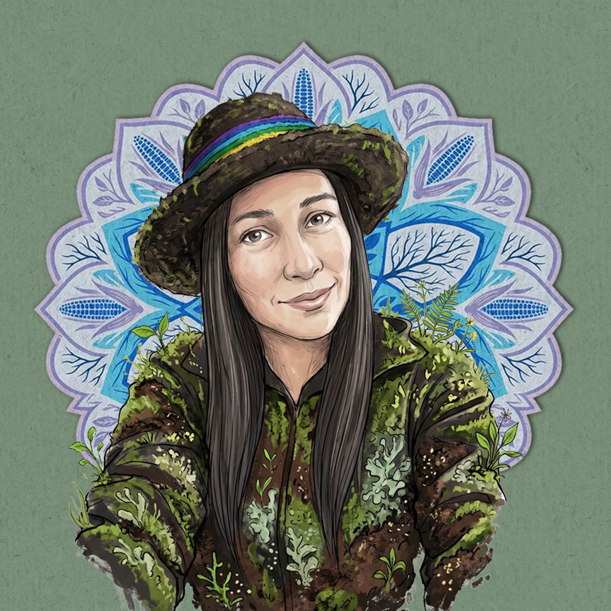
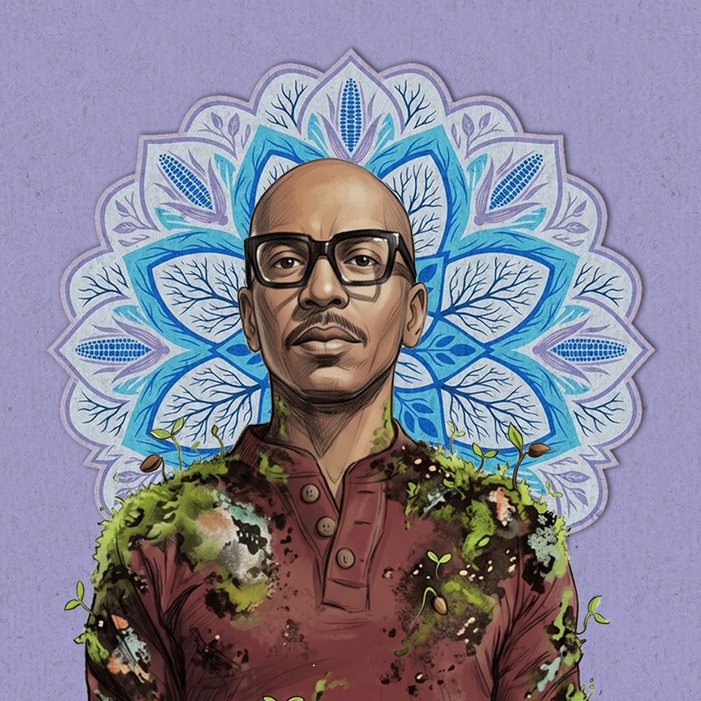
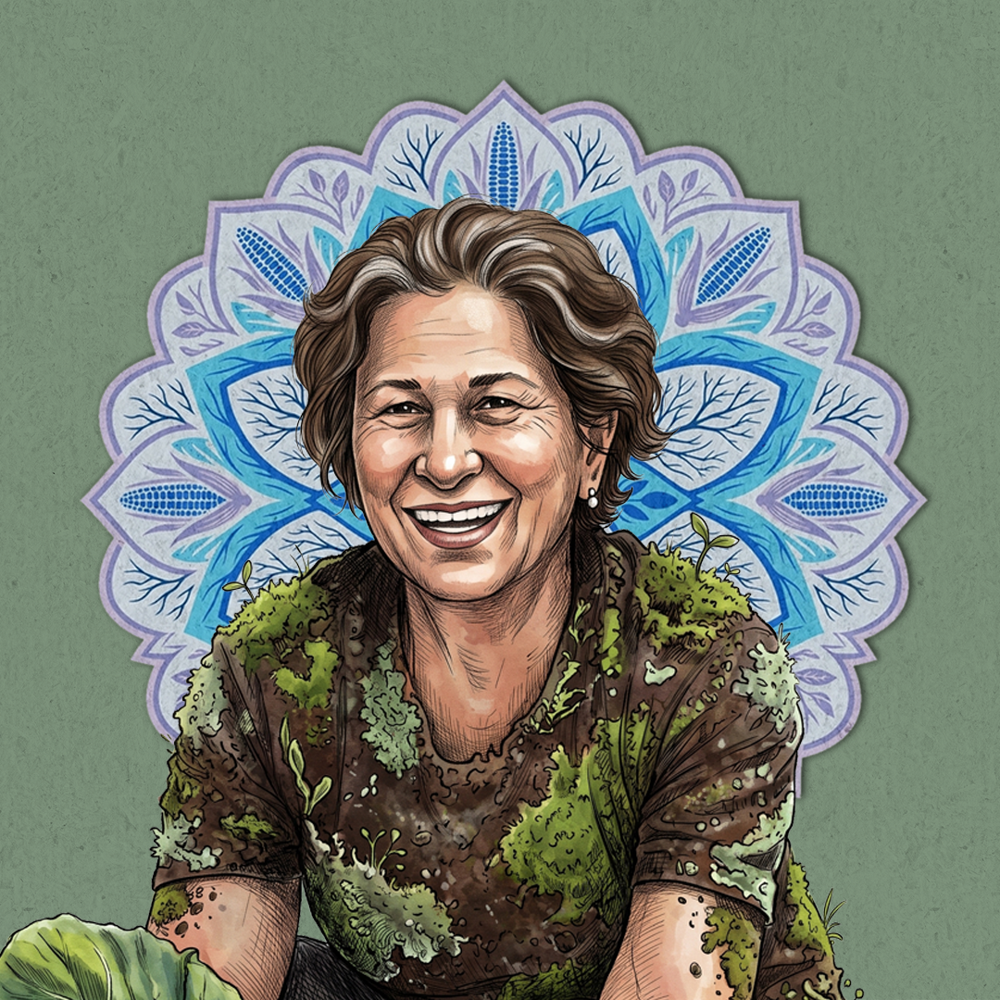
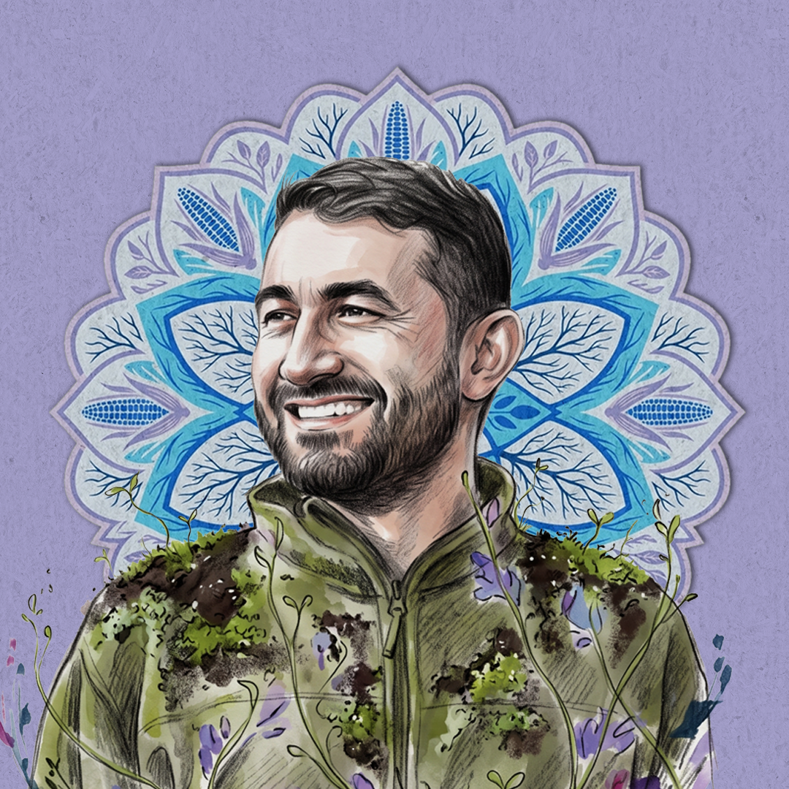

Fase 1 Investigación aplicada y co-diseño
- Entrevistas preliminares (semiestructuradas, con grabación autorizada).
- Identificación de especies botánicas, narrativas y símbolos a incluir en el mándala.
- Co-diseño del mándala vivo con las sabedoras.
Apertura · Dispositivo vivo
Finca El Yarumo, Vereda La Palma, San Cristóbal, Medellín · 20 de octubre de 2026
Cultivar la vida es la forma más alta de hacer cultura.
Esta guía metodológica es un dispositivo vivo, una cartografía performativa que sistematiza la experiencia del coloquio «El Arte de Sembrar» realizado en la Finca El Yarumo, Vereda La Palma, San Cristóbal, Medellín, el 20 de octubre de 2026. No es un manual rígido, sino un semillero de metodologías que puede germinar en otros territorios, con otros pueblos, otras semillas y otras memorias.
La guía responde a la premisa de que cultivar la vida es la forma más alta de hacer cultura, y que los eventos académicos pueden —y deben— salir del aula, del auditorio y del salón para encontrarse con el surco, el gesto, el canto y la palabra compartida.
A continuación, la lista completa de lo que debe llevar la guía metodológica:
Metodología integral: investigación, logística y comunicación
Hacia la sanación y el tejido comunitario a través de la naturaleza
Parte I · Marco conceptual y ético
La siembra como acto epistémico:
El evento no es una conferencia ni un seminario tradicional. Es un coloquio situado donde la siembra opera como:
Parte I · Definiciones clave
Definiciones clave (glosario vivo). Abre cada ficha. Escape o «Volver» la cierra.
Latín · animare
Dar aliento de vida.
Abrir fichaPeregrinación
Hacia lo sagrado del territorio.
Abrir fichaAmazónico
Claros dinámicos.
Abrir fichaMétodo
Conversación horizontal.
Abrir fichaEscritura
Surcos, simetrías, trazados.
Abrir fichaDispositivo
Cartografía performativa de 3 × 4 m.
Abrir fichaResistencia
Saberes en semillas, gestos y cantos.
Abrir fichaMesoamericano
Maíz, frijol, calabaza, quelites.
Abrir fichaMontaña
Territorio leído como obra colectiva.
Abrir fichaMétodo
Conecta multiversos.
Abrir fichaAndino
Crianza mutua.
Abrir fichaInteligencia distribuida, diálogo de saberes y crianza mutua
Inteligencia distribuida, cooperación subterránea, cuidado como forma superior de inteligencia.
Caminar como peregrinación hacia lo sagrado, perder la cabeza para encontrarla en los bosques.
Animación sociocultural como acto político de dar aliento de vida.
Cartografía performativa donde convergen multiversos sin que uno devore a los otros.
Crianza mutua entre semilla y comunidad.
Polisistema simbiótico maíz-frijol-calabaza-quelites.
Espacio de sanación y claros dinámicos de agrobiodiversidad.
Parte II · Fases metodológicas
Fase 1: Pre-evento (Gestión territorial y co-diseño). Fase 2: Evento (Ejecución del coloquio). Fase 3: Post-evento (Sistematización y circulación).
Elige una fase. Con el teclado, las flechas cambian de etapa.
Gestión territorial y co-diseño. Acciones estratégicas para tejer confianza antes del encuentro.
A. Gestión territorial y acuerdos comunitarios
Visita de reconocimiento al espacio (finca, maloca, escuela, casa cultural).
Firma de carta de autorización de uso de suelo con la familia o comunidad anfitriona.
Reunión con JAL, junta de acción comunal, cabildos o consejos comunitarios.
Identificación de guardianes territoriales del saber.
Contextualización territorial, siembra viva y diálogo de saberes.
Productos esperados, cuidado del mándala y circulación de memorias.

Introducción · Territorio situado
No es solo un grano, ni un simple dato estadístico, ni una metáfora vacía. La semilla es un archivo vivo, un documento antropológico material que contiene la historia de nuestras manos, nuestros climas y nuestras luchas más profundas. En la vereda La Palma, en el corregimiento de San Cristóbal (Medellín), el territorio no puede ser entendido como un recurso explotable, un mapa abstracto o un escenario pasivo para el desarrollo rural y urbano. El territorio es, ante todo, un Oikos: la casa común donde se entrelazan inseparablemente la ecología, la economía doméstica, el cuidado mutuo y la arquitectura del paisaje y todas las intervenciones que sobre este realizan, hombres y mujeres en sus prácticas de siembra, de pastoreo, de pintar con sus flores y plantas el territorio. Este documento, titulado Elementos metodológicos para el Desarrollo del Evento «El Arte de Sembrar: Intercambios de Saberes. Diálogos con-sentidos» no busca establecer una sola ruta para el desarrollo de eventos o encuentros de este tipo, su objetivo, busca establecer una serie de acciones y gestiones de tipo cultural para identificar que elementos de contexto, sirven, que actores vienen haciendo visible su trabajo y liderazgo y los que quizás precisen mostrar lo que hacen.
Sembrar no es solo colocar una semilla en la tierra. Sembrar es, ante todo, un verbo total que atraviesa el cuerpo, la palabra, el tejido, la organización, la memoria y el paisaje. El acto de sembrar se despliega en múltiples dimensiones: se siembra maíz y uchuva, sí, pero también se siembra cultura, se siembran tejidos comunitarios, se siembran organizaciones como Mujeres Siempre Vivas, se siembran caminos entre lo urbano y lo rural, se siembra memoria biocultural en los cuerpos de las mujeres Nasa, afrodescendientes y campesinas, se siembran diálogos interculturales, se siembran multiversos que conviven sin perderse.
«El Arte de Sembrar», no reduce la siembra a una técnica agrícola. La entiende como una práctica artística, epistémica, política y poética que atraviesa todas las dimensiones de la vida comunitaria. La siembra es un archivo vivo que guarda rituales, gestos, cantos, recetas, organizaciones, luchas y esperanzas. Es un canal de enunciación cultural que permite a los pueblos nombrarse, reconocerse y defenderse frente a la homogeneización del mundo.
Frente a un modelo civilizatorio que ha separado el cuerpo de la tierra, la academia del territorio, la cultura de la agricultura y la memoria del presente, este coloquio propone volver a tejer los hilos. Proponemos un marco interdisciplinario donde el cuerpo —primer territorio de la siembra—, el sabor —forma de conocimiento—, el caminar —método etnográfico—, el tejido —práctica organizativa— y la memoria —archivo vivo— se entrelazan en una sola trama. A través de las lentes de David Le Breton, quien ha explorado la materialidad del cuerpo y los sentidos, de Henry David Thoreau, quien elevó el caminar a peregrinación hacia lo sagrado, de Stefano Mancuso, quien reveló la inteligencia vegetal de las plantas, y de Iván Illich, quien soñó una sociedad desescolarizada, este documento articula los saberes ancestrales de Nicxa Tatiana Estupiñán, la gobernanza ambiental de Iván Mauricio Aristizábal, la pedagogía agroecológica de Nelly Bedoya, Jhon Ríos y Enerieth Hernández, el cuerpo en movimiento de Juan Fernando Vahos, y la gestión cultural de Juan Fernando Sánchez Vásquez.
Sembrar cultura es cultivar vida. Sembrar con el apoyo de las organizaciones es tejer comunidad. Sembrar caminos es abrir senderos de pervivencia. Sembrar memoria es defender los multiversos. Este documento es un mapa para habitar ese acto total, donde cada concepto, cada línea metodológica y cada ficha interactiva es una semilla que germina en el territorio. Dentro de los propósitos también esta evidenciar, con rigor y poesía, la lucha tangible de quienes siembran, caminan y habitan.
A través de las lentes de pensadores como David Le Breton, quien ha explorado la materialidad del cuerpo y los sentidos, y Henry David Thoreau, quien elevó el caminar a peregrinación hacia lo sagrado, y de la sabiduría ancestral de quienes habitan estas montañas —las mujeres Nasa, afrodescendientes y campesinas de San Cristóbal—, este documento busca ofrecer un lenguaje sencillo pero profundo. Es un recurso diseñado para el coloquio que se realizó en la Finca El Yarumo, vereda La Palma donde actores y lideresas como Nelly Bedoya y el colectivo Mujeres Siempre Vivas, articulando a actores como Nicxa Tatiana Estupiñán, Iván Mauricio Aristizábal, Juan Fernando Vahos, Eneriet Hernández y Estefanía Velásquez entre otros que en los intermedios de cada intervención, apoyaron la reescritura como sustrato, como tierra fértil de la cultura entendida como cultivo, tejido vivo y defensa de los multiversos.
En este estimulo, la siembra va más allá de su función agrícola para convertirse en un acto de creación estética, producción de conocimiento y cultivo de cultura: quien siembra diseña, anticipa, simboliza, narra y escribe sobre la tierra viva, pero también sobre el cuerpo, la organización, la memoria y el tejido comunitario. Este concepto sostiene el objetivo general del evento, porque reconocer la siembra como arte y saber legítimo habilita un diálogo intercultural con la academia en igualdad de condiciones y también abre el horizonte epistémico del coloquio.
Un mapa para habitar el acto total, donde cada concepto, cada línea metodológica y cada ficha interactiva es una semilla que germina en el territorio.
Cultivar vida: la cultura como raíz que nutre la identidad y da frutos de diversidad.
Sembrar con el apoyo de las organizaciones es tejer lazos solidarios que fortalecen el territorio.
Sembrar caminos es abrir senderos de pervivencia entre lo urbano y lo rural.
Sembrar memoria es proteger narrativas plurales: pasado, presente, futuro y ancestral.
Fichas interactivas
Transmisión oral y prácticas agrícolas tradicionales.
Cooperación y trabajo colectivo en la cosecha y la organización.
Archivos comunitarios y narrativas orales preservadas.
Rostros del territorio
Quien cuida la agrobiodiversidad y la transmite.
Quien abre senderos entre mundos y organizaciones.
Quien nombra, canta y defiende los multiversos.
Evidenciar, con rigor y poesía, la lucha tangible de quienes siembran, caminan y habitan.
Línea metodológica
Diagnóstico participativo.
Observación etnográfica.
Acción transformadora.
Propósitos del mapa
Mapear el acto total de siembra y habitabilidad.
Visibilizar la lucha y la poesía del territorio.
Activar fichas interactivas para la acción local.
Defender los multiversos de la memoria colectiva.
El territorio germinado: cada línea, cada ficha, cada rastro, es una semilla que germina en el territorio.
La siembra es un archivo vivo que guarda rituales, gestos y memorias, y funciona como canal de enunciación cultural para fortalecer diálogos pluriétnicos y rurales. San Cristóbal, con su vocación campesina y agrícola, es un escenario posible para este reconocimiento. Pero también es un escenario para sembrar cultura: cuando las mujeres del colectivo Mujeres Siempre Vivas tejen sus redes de economía solidaria, están sembrando organización. Cuando Nicxa Tatiana Estupiñán abre caminos en la escuela Dxij Phade para la primera infancia Nasa en la ciudad, está sembrando pervivencia cultural. Cuando Juan Fernando Vahos activa los cuerpos con el ritmo «Chumbalaca» y «Alma africana», está sembrando memoria afrodescendiente en el presente.

Desde la perspectiva de David Le Breton en Antropología del cuerpo y modernidad, el cuerpo del campesino, del indígena, del afrodescendiente que siembra no es una máquina biológica aislada, sino una realidad social y material profundamente inscrita en el territorio. Cuando las manos de Nelly Bedoya tocan la tierra, están leyendo un texto vivo que la academia formal rara vez reconoce. La siembra, entonces, se convierte en una epistemología encarnada: el saber no está en los libros, está en los callos, en la postura del cuerpo al agacharse, en el ritmo de la pala, en el tejido de las redes comunitarias.
Este concepto sirve para abrir es una manera de aprestamiento para conccentar la atención de todos los asistentes, se sugiere entregar una semilla o una fruta, verdura para intencionar los sentidos y la memoria.
El arte tierra, o land art, es una corriente artística que usa el suelo, los materiales vegetales y minerales y el paisaje como lienzo y obra, convirtiendo el territorio en escena estética viva y política. En el evento, el mándala vivo de 3x4 metros es su pieza central: no es decoración, es una obra performativa, cartografía viva y siembra colectiva hecha con materiales propios del territorio. Su montaje busca dialogar con la tierra, al estilo de los artistas plásticos de Primiti Colors, quienes en una de sus exposiciones proponen el color sin teoría como parte de un laboratorio de creación.
El mándala vivo propone un trabajo colectivo donde la creación y siembra se convierten en un gesto y acto estético autónomo y legítimo. Pero este arte tierra no solo siembra plantas: siembra símbolos, siembra memorias, siembra encuentros. Cada brazo del mándala representa un multiverso: el mundo Nasa, el mundo afrodescendiente, el mundo campesino, el mundo académico. Cada tierra es una grafía territorial, una escritura del paisaje que la comunidad reconoce como propia.
En lo metodológico, la consulta con los actores frente a las semillas, el símbolo, debe aparecer de manera vinculante, el paso a paso del montaje y el registro fotográfico evolutivo que muestre la obra viva creciendo. Esta propuesta se alinea con lo que Thoreau describe en Caminar: el caminante no busca llegar a un destino, sino sumergirse en el paisaje, observar los detalles, seguir los rastros de la naturaleza. El land art en El Yarumo es esa inmersión hecha materia: el cuerpo del artista, del campesino, del indígena, del afrodescendiente se funden con la tierra, y el resultado no es un objeto para ser contemplado desde afuera, sino un territorio para ser habitado, sembrado y defendido.

La agroecología es una ciencia, una práctica y un movimiento que integra ecología, agricultura y justicia social; aquí es el suelo literal y el suelo conceptual que recoge a los actores invitados y la serie de conceptos y preguntas orientadoras de todo el evento. La finca del Yarumo es un sistema agroecológico vivo que sostendrá el coloquio y la fuerza de los diálogos de saberes. Sin la agroecología no habría marco ético, ni marco productivo, ni un territorio de aprendizaje para el diálogo de saberes. Aporta además los conceptos clave del evento: dignidad del trabajo campesino, soberanía alimentaria y defensa de la biodiversidad local.

Pero la agroecología también es un tejido organizativo. El colectivo Mujeres Siempre Vivas, del cual hace parte Nelly Bedoya, es una organización que nació de la necesidad de defender el territorio frente a los agroquímicos en los años 90. Sembrar agroecología es sembrar organización, es tejer redes de economía solidaria, es construir mercados campesinos que dignifiquen el trabajo rural. La Corporación «Una Planta a la Vez», con su proyecto agroecológico Martha Guerra, es otro ejemplo de cómo la siembra se convierte en organización juvenil que territorializa la agroecología en San Cristóbal.
Desde la perspectiva de Le Breton en El sabor del mundo, el sabor de una uchuva cosechada en El Yarumo no puede ser replicado en un laboratorio. Ese sabor contiene la información del suelo, de las lluvias de montaña, del cuidado libre de pesticidas y del tiempo de maduración respetado. Al comer esta uchuva, el cuerpo no solo se nutre; está «probando» el territorio, estableciendo un vínculo material directo con el paisaje y con el agricultor que la cultivó. La agroecología, entonces, es una soberanía sensorial y organizativa: defender los sabores nativos es defender la economía local, la dignidad del trabajo y los tejidos comunitarios que los sostienen.

En lo metodológico se sugiere tener dentro de las actividades una cromatografía que revele la salud del territorio y de las organizaciones que lo habita. Imágenes que permitan al público ver la interacción de diferentes pueblos y paisajes de sus paisajes y siembras.
El diálogo de saberes es aquí el marco en el que saberes ancestrales, campesinos, indígenas, afrodescendientes y académicos conversan sin jerarquías epistémicas: nadie lo sabe todo, nadie lo ignora todo. Esta línea define el formato de coloquio-conversatorio, la moderación intercultural, los turnos flexibles y las preguntas sembradas desde el público, garantizando que la palabra circule como semilla en una siembra comunitaria. La interculturalidad no es un tema sino una condición del encuentro: pluriétnica de invitados, de públicos y de estéticas que se tejerán en el mándala vivo de la finca.
Pero el diálogo de saberes también es sembrar encuentros, sembrar puentes, sembrar caminos entre mundos que usualmente no se hablan. Como se evidenció en la ejecución del evento, la animación comunitaria operó como un puente simbólico que une los multiversos que conviven sin devorarse: el mundo Nasa representado por Nicxa Tatiana, la memoria afrodescendiente y corporal de Juan Fernando Vahos, la sabiduría campesina y agroecológica de Nelly Bedoya y Jhon Ríos, y la academia de Iván Mauricio. El puente es la condición de posibilidad para que la nasayuwe, el canto afro, la palabra campesina y el texto académico transiten en horizontalidad.

Este enfoque se alinea con lo que Iván Illich plantea en La sociedad desescolarizada: «la mayor parte del aprendizaje no es la consecuencia de una instrucción. Es más bien el resultado de una participación no estorbada en un entorno significativo». Sacar el saber del aula y llevarlo al territorio no es una carencia de rigor, sino la materialización de una «trama de aprendizaje convivencial». La comunidad se moviliza como protagonista de su propio desarrollo cognitivo y cultural, rompiendo el monopolio de la enseñanza formal y reafirmando que el territorio mismo es el dispositivo pedagógico más potente.
En lo metodológico se proponen esta serie de enlaces que nos permiten reconocer esa mixtura étnica, esos paisajes culturales, esos rostros y cantos que celebran la siembra, el surco, la chagra.
El paisaje cultural es el territorio leído como obra colectiva: surcos, colores, trazados y ritmos de la palabra y del gesto agrícola inscritos en la montaña durante generaciones. San Cristóbal, y sus veredas, no son escenarios pasivo: es actor, espacio educativo y lugar productivo de la agroecología que acoge el coloquio. En él convergen memorias de la siembra, el agua y las semillas nativas en el contexto urbano-rural de la Comuna 60.
Pero el paisaje cultural también es sembrar caminos, sembrar rutas de transporte compartido desde puntos urbanos, sembrar senderos que conectan las 7 veredas del corregimiento: El Llano, Travesías, La Loma, Pajarito, La Palma, El Patio y San José de la Montaña. Caminar las laderas de San Cristóbal, desde el Parque Biblioteca Fernando Botero hasta las veredas de La Palma o Pajarito, es un método etnográfico y arquitectónico de primer orden. Como Thoreau afirma, el caminante se convierte en un cartógrafo sensible, mapeando el Oikos con los pies.
Le Breton, en Elogio del caminar, complementa esta visión al destacar cómo la marcha permite al individuo reapropiarse de su cuerpo y de su tiempo frente a las exigencias alienantes de la modernidad. Caminar es un acto de resistencia rítmica. En el contexto de nuestros talleres con jóvenes y comunidades rurales, proponer una «caminata etnográfica» es una herramienta pedagógica poderosa. No se trata de caminar para hacer ejercicio, sino de caminar para observar, preguntar y sentir. Al caminar juntos, se rompen las jerarquías. El sociólogo, el arquitecto, el campesino, el estudiante, en el adulto mayor, el niño comparte diferentes ritmos, y miradas diversas sobre el paisaje que los junta en la construcción colectiva del mándala.
En lo metodológico se sugiere tener un mapa del territorio para mostrar y que los participantes se identifiquen y ubiquen en él.
La memoria biocultural no vive solo en relatos: también vive en semillas, plantas, gestos, recetas, cantos y rituales que pasan de mano en mano y de cuerpo en cuerpo. Resistir es seguir sembrando, seguir danzando, trazando y tejiendo con cada una de las formas propias de nombrar, sembrar y cultivar la vida. Este concepto conecta a mujeres campesinas, indígenas y afrodescendientes, con sus ritos y sus maternidades.
Pero la memoria biocultural también es sembrar organizaciones que defienden la pervivencia cultural. La escuela Dxij Phade («abriendo caminos» en nasayuwe), coordinada por Nicxa Tatiana Estupiñán en el barrio Mirador de Tocaima en Bogotá, es un ejemplo de cómo la memoria se siembra en contextos urbanos donde los niños indígenas no tienen acceso a su territorio de origen. Sembrar memoria es sembrar casas de pensamiento intercultural, es sembrar juntas de acción comunal que acogen pueblos indígenas, afros, campesinos, víctimas del conflicto armado y firmantes de paz.
Desde la cosmovisión Nasa, la semilla es un miembro de la familia que requiere afecto, conversación y agradecimiento. La agrobiodiversidad no responde a la lógica de la productividad uniforme, sino a la gestión del riesgo ecológico y a la conservación de un diálogo afectivo entre la comunidad humana (Runa) y el mundo sagrado (Sallqa y Pacha). La resistencia biocultural es, entonces, una maternidad expandida: el útero espiral donde se gesta la pervivencia cultural frente al querer homogenizar todo.
Se propone de manera metodológica una espiritual que a su vez identifique la figura del útero como elemento simbólico de la fuerza de la memoria y la siembra.

Las grafías del territorio son las escrituras de la tierra: surcos, simetrías, colores y trazados que funcionan como texto legible y estética viva inscrita en el paisaje cultural. Son el ritmo de la palabra y del gesto agrícola; son la huella que la siembra deja en la montaña, en la vereda, en el camino, en la chagra y que la lectura comunitaria de las comunidades y pueblos reconoce como propia.
Pero las grafías del territorio también son sembrar escrituras organizativas, sembrar trazados de redes comunitarias, sembrar simetrías entre lo urbano y lo rural. El mándala vivo es una grafía performativa: cada surco es una línea, cada brazo es una página, cada semilla es una letra. La siembra es una escritura intercultural donde cada actor deja su huella.
Como afirma la cosmovisión andina, la tierra no se concibe como un objeto inerte o suelo agrícola, sino como Pachamama, una entidad viva dotada de sensibilidad, memoria y voluntad. Las semillas nativas son tratadas como miembros de la familia, y los surcos que las acogen son caricias al territorio, no heridas. En la Amazonía, la chagra es un espacio de claros dinámicos en el bosque donde las mujeres son las depositarias y creadoras principales de la agrobiodiversidad. Ellas no solo cultivan, sino que dialogan con los espíritus guardianes de las plantas.
Sembrar como escrituras en el paisaje, alimenta las preguntas del público e invita metodológicamente a ver el video sobre las semillas y su importancia para los pueblos y saberes.
Cartografía performativa
El mándala vivo es un mapa que no representa el territorio: lo actúa, lo siembra y lo hace crecer; por eso lo llamamos cartografía performativa y dispositivo vivo. Es el dispositivo metodológico central que cierra el conversatorio: lo que revelan las entrevistas previas, especies, símbolos y grafías, se siembra allí por manos de las mujeres invitadas y del público asistente. Su tamaño de 3 × 4 metros, su figura circular de semillas y plantas, representan un trenzado, una escritura intercultural donde cada actor se involucra en la construcción colectiva.
Cada brazo del mándala representa un multiverso: el mundo Nasa, el mundo afrodescendiente, el mundo campesino, el mundo académico. Su montaje busca dialogar con la tierra, al estilo de los artistas plásticos de Primiti Colors, quienes proponen el color sin teoría como parte de un laboratorio de creación.
Metodológicamente se requiere un conversatorio previo con los actores invitados para de manera conjuntas identificar las formas, las plantas y sus beneficios. En lo logístico, se debe dejar trazado con 4 días de anterioridad, dejando además los insumos necesarios y las plantas, para que la intención pedagógica de la siembra, alcance su realización y los participantes puedan dialogar y conversar sobre lo que significa, sembrar juntos.
Activa un cuadrante con el cursor, el dedo o el teclado. Cada mundo abre su ficha.
Cultura · Cuerpo · Ruta operativa
Cultura como cultivo: cultivar cultura es cultivar vida; la etimología une ambas palabras y la propuesta las vuelve método: lo que se siembra se cuida; lo que se cuida se cultiva. Cultura como tejido: tejer comunidad es tejer biodiversidad; el borde trenzado del mándala y la escuela Dxij Phade muestran que la cultura se teje entre generaciones y pueblos. Cultura como cuidado: la ética del cuidado del colectivo Mujeres Siempre Vivas sostiene todo el evento.
Pero cultura como cultivo, tejido y cuidado también es sembrar organizaciones, sembrar caminos, sembrar memoria, sembrar diálogos. Cuando el colectivo Life energía en movimiento, dirigido por Juan Fernando Vahos, activa los cuerpos con el ritmo afro-latino, está cultivando memoria corporal. Cuando las mujeres del colectivo Mujeres Siempre Vivas tejen sus redes de economía solidaria, están tejiendo organización. Cuando Nelly Bedoya cuida el suelo de su finca, está cuidando el territorio y la comunidad que lo habita.
Desde la perspectiva de Stefano Mancuso en La nación de las plantas, «las plantas no son objetos inertes ni meros decorados del paisaje; son la nación más antigua, poderosa y sabia del planeta. Ellas inventaron la vida en la tierra, tejen redes subterráneas de cooperación inquebrantable y nos enseñan que la verdadera inteligencia no es la conquista, sino el cuidado». La ética del cuidado es, entonces, la forma más alta de inteligencia vegetal y humana.
En lo metodológico se sugiere abrir un espacio con los participantes teniendo como estrategia didáctica las palabras: CULTIVAR, TEJER, CUIDAR.

La co-creación horizontal es la producción conjunta entre academia, comunidad y gestores culturales: el mándala no lo diseña una sola persona, se hace con todos, se traza con lo que revelan entrevistas y talleres. La relatoría en vivo, la moderación intercultural y los acuerdos comunitarios muestran que todo el evento se teje entre muchas manos diversas y que su autoría es colectiva, circular y compartida.
Pero la co-creación horizontal también es sembrar organizaciones colectivas, sembrar tejidos sin jerarquías, sembrar caminos compartidos, sembrar memorias plurales. Este principio se alinea con la pedagogía de la Madre Tierra: las preguntas de investigación se tratan como «semillas» y el cuerpo, el ritmo y la palabra se convierten en herramientas legítimas de producción de conocimiento. La co-creación horizontal es también la condición de posibilidad para que la nasayuwe, el canto afro, la palabra campesina y el texto académico transiten en horizontalidad, bajo la premisa de que «nadie lo sabe todo, nadie lo ignora todo».
En la ejecución del evento, la co-creación horizontal se evidenció en la conformación del equipo: una educadora Nasa, un sociólogo experto en desarrollo rural, un técnico agroecológico, una líder campesina local, un director creativo afrodescendiente y un gestor cultural con raíces en la comuna 60. Esta convergencia garantiza que el evento no sea una extracción de conocimiento, sino un encuentro ético con compensación justa, consentimiento informado y una verdadera co-creación que respeta la diversidad pluriétnica del territorio.
Se propone la imagen de unas manos tejiendo al fondo una montaña en movimiento.
Los multiversos son la convivencia de muchos mundos: Nasa, afro, campesino, académico, urbano y rural, sin que uno devore a los otros; la propuesta del coloquio los defiende como condición epistémica, estética y política. La pluriétnicidad define la composición de invitados y públicos: mujeres indígenas, campesinas y afrodescendientes; académicos; técnicos; gestores; estudiantes; productores y toda la comunidad general de San Cristóbal. Cada mundo trae su lengua, su ritmo y su estética propias: nasayuwe, canto afro, palabra campesina y texto académico; el coloquio los acoge a todos sin forzar una traducción única o uniforme.
Pero los multiversos también son sembrar organizaciones plurales, sembrar tejidos interculturales, sembrar caminos que conectan mundos, sembrar memorias diversas. En la cosmovisión andina, la tierra es Pachamama, una entidad viva dotada de sensibilidad, memoria y voluntad. Los multiversos son las múltiples formas en que esta entidad se manifiesta y es nombrada. No hay una sola manera de habitar el territorio; hay tantas como pueblos lo han hecho a lo largo de la historia.
En la ejecución del evento, los multiversos se evidenciaron en la participación de habitantes de 7 veredas del corregimiento, en la convergencia de organizaciones como Aethernum Green, Mujeres Siempre Vivas, Una Planta a la Vez, I Motion, Productores de Acab, grupos de adultos mayores, jóvenes, estudiantes de la Universidad Nacional y gestores culturales del Parque Biblioteca Fernando Botero. Esta diversidad pluriétnica y pluriterritorial es la condición de posibilidad para que el coloquio sea un verdadero diálogo de saberes.

La experiencia sensible y creativa que, desde la raíz negra y afro, reconoce el cuerpo como nuestro territorio primero: un espacio de memoria, percepción, expresión y transformación, cuyo cultivo es fundamental para ampliar nuestra consciencia y nuestra manera de habitar. A través del ritmo, el canto, las onomatopeyas y la percusión corporal, se explora la relación entre cuerpo, memoria y tierra, tomando como referente las tradiciones musicales africanas en las que el ritmo acompaña las labores agrícolas y fortalece los vínculos comunitarios. Inspirados en ritmos como el Kassa y el Konkoba, que propician un encuentro entre el movimiento, la escucha y la creación colectiva, donde cada gesto pueda convertirse en una forma de recordar, comunicar y sembrar. Entendemos el gesto plástico como una acción creadora que transforma nuestra relación con el cuerpo y el entorno. Sembrar es, entonces, mucho más que depositar una semilla en la tierra: será cultivar la atención, reconocer nuestras raíces, despertar la memoria y establecer relaciones conscientes con los otros y con la naturaleza.
El cuerpo como primer territorio invita a comprender que, así como la tierra requiere cuidado para germinar, el cuerpo necesita ser cultivado mediante el movimiento, la sensibilidad, el encuentro y la expresión. De esta manera, el ritmo se convierte en un lenguaje compartido y la siembra en un acto simbólico y colectivo que nos permite reconocer la vida como una creación permanente. Sembrar un gesto, cultivar el cuerpo, despertar la memoria y transformar nuestra manera de habitar la tierra.
Se propone metodológicamente activar la escucha con sonidos de tambores y ocarinas.
A continuación, presentamos 5 líneas de trabajo que posibilitan unas rutas para entender y comprender el trabajo del coloquio en sus diferentes conceptos y estrategias y elementos didácticos.
La IAP es la metodología que garantiza que el conocimiento no se extraiga del territorio, sino que se co-construya con él. Incluye entrevistas previas con las mujeres sabedoras, co-diseño del mándala con los actores territoriales, construcción colectiva de preguntas y respuestas durante el coloquio, y sistematización participativa de los saberes emergentes. Esta línea asegura que el evento no sea una extracción de conocimiento, sino un encuentro ético con compensación justa, consentimiento informado y una verdadera co-creación que respeta la diversidad pluriétnica del territorio.
El encuentro entre conocimientos indígena Nasa, afrodescendiente, campesino y académico se realiza bajo una moderación intercultural con turnos flexibles, reconocimiento de protocolos propios de cada pueblo y traducción entre lenguajes técnicos, ancestrales y artísticos. Esta línea garantiza que la palabra circule como semilla en una siembra comunitaria, sin jerarquías epistémicas.
El diseño participativo del mándala de 3x4 metros, la siembra performativa como acto artístico simultáneo al diálogo, el uso de tierras de colores y material vegetal (estética Primiti Colors) y el registro etnográfico del proceso creativo en tiempo real componen esta línea. El land art aquí no es una intervención sobre el paisaje, sino una conversación con él.
El documental corto etnográfico (5-7 minutos), metodología, las cápsulas audiovisuales de saberes y el repositorio digital abierto como archivo vivo garantizan que el conocimiento producido no se quede encerrado en la vereda, sino que circule como semilla en otros territorios.
El recorrido sensorial por la finca, la lectura colectiva del paisaje y los trazados de cultivo, el intercambio simbólico de semillas y la guía de réplica metodológica para otros territorios componen esta línea. La pedagogía aquí no es unidireccional: la academia aprende del territorio (sobre los ciclos lunares, la siembra en espiral, el cuidado del agua y la memoria del cuerpo), y el territorio se ve reflejado y dignificado en los marcos conceptuales que la academia aporta para defender sus prácticas.
Promover la realización de eventos académicos de arte y cultura mediante el otorgamiento de estímulos a los habitantes de las comunas y corregimientos de Medellín, con los recursos priorizados por la comunidad en el marco del Programa de Planeación del Desarrollo Local y Presupuesto Participativo.
Los encuentros académicos constituyen espacios fundamentales para la construcción de conocimiento, el fortalecimiento del pensamiento crítico y la circulación de investigaciones y experiencias en el campo cultural o artístico. A través de foros, seminarios, simposios, coloquios, congresos, encuentros investigativos o jornadas académicas, se propicia el diálogo entre expertos, artistas, investigadores, gestores y comunidad. Este estímulo está orientado a la realización de un evento académico que promueva el encuentro, la reflexión crítica y el intercambio de saberes en torno a las artes, la cultura, el patrimonio, la gestión cultural o procesos investigativos. El estímulo pretende fomentar la producción y socialización de pensamiento crítico y la Visibilización de procesos culturales que aporten al desarrollo cultural de Medellín. Asimismo, se busca que el evento tenga un impacto real en la comunidad, promoviendo la participación, la apropiación social del conocimiento y la proyección de nuevas iniciativas culturales y académicas.
Antes de disponerse a la realización de un coloquio, resulta absolutamente imperativo que los actores, líderes y profesionales invitados comprendan a profundidad el contexto territorial donde van a interactuar. Esta contextualización territorial no es un mero trámite, sino el cimiento sobre el cual se construirá todo el diálogo. Conocer las dinámicas sociales, las tensiones históricas, las riquezas culturales y las necesidades específicas de la comunidad permite a los participantes evitar suposiciones erróneas y enfoques descontextualizados que podrían resultar irrelevantes o incluso ofensivos. Por lo tanto, este proceso de inmersión y análisis previo debe materializarse como la introducción formal al coloquio con los asistentes. Al presentar esta contextualización al inicio del evento, se establece un lenguaje común, se legitima la voz de la comunidad y se alinea a todos los participantes hacia una misma frecuencia de respeto y empatía. Los asistentes, al recibir esta información estructurada, comprenden que el espacio que ocupan está cargado de significados que exigen una escucha activa y una participación responsable. Así, la contextualización territorial trasciende la función de un simple prólogo; se convierte en la brújula que orientará las ponencias, los debates y las posteriores conclusiones. Sin este anclaje geográfico y social, el coloquio correría el riesgo de convertirse en un ejercicio académico aislado, ciego ante las realidades que pretende transformar o comprender. En definitiva, asumir el territorio como el punto de partida garantiza que las intervenciones de los líderes y profesionales no sean discursos vacíos, sino respuestas pertinentes, situadas y genuinamente comprometidas con el entorno que los acoge, transformando el encuentro en una verdadera oportunidad de construcción colectiva y transformación social significativa para todos los sectores involucrados en esta importante y necesaria jornada de reflexión compartida que busca generar un impacto real y duradero en la vida cotidiana de las personas.
Es muy importante desde el principio definir muy bien los actores y los roles. Con esto se logra identificar que elementos y estrategias se deben seguir para que en el momento de la puesta en marcha del evento académico todos y todas estén enterados de las funciones, temporalidad y el desarrollo de la agenda.
Definir con claridad los objetivos de la fase de avanzada, las entrevistas, los recursos a priorizar y la locación, debe estar en la primera fase. Esto garantiza varias cosas.
Todos los actores deben conocer con antelación, la agenda y los horarios en los que participarán en las actividades, esto garantiza cumplimiento en los horarios.
Es importante identificar cuáles serán los insumos, materiales de cada uno de los actores para buscar que la presentación y la línea en la que participan en el coloquio, cuenta con las ayudas audiovisuales, de papelería, entre otros equipos necesarios en las estrategias didácticas de cada actor.
Dentro de los productos esperados, debe quedar muy claro para los actores, que se desea de cada uno. Esto con el fin de recoger:
Este elemento es fundamental, para aprovechar los escenarios de encuentros con los actores, dado algunos pueden estar moviéndose por asuntos laborales en otros lugares y la información se puede dilatar al punto de retardar los procesos de sistematización de la información y con esto las entregas de informes.
Tener presentes los indicadores y los resultados esperados, permite diseñar estrategias e instrumentos que permitan medir las percepciones e identificar mejoras y acciones de transformación necesarias en todas las metodologías.
Cuadrante 01 · Mundo Nasa

Cuando Nicxa Tatiana Estupiñán abre caminos en la escuela Dxij Phade para la primera infancia Nasa en la ciudad, está sembrando pervivencia cultural. La escuela Dxij Phade («abriendo caminos» en nasayuwe), coordinada por Nicxa Tatiana Estupiñán en el barrio Mirador de Tocaima en Bogotá, es un ejemplo de cómo la memoria se siembra en contextos urbanos donde los niños indígenas no tienen acceso a su territorio de origen.
Desde la cosmovisión Nasa, la semilla es un miembro de la familia que requiere afecto, conversación y agradecimiento. La agrobiodiversidad no responde a la lógica de la productividad uniforme, sino a la gestión del riesgo ecológico y a la conservación de un diálogo afectivo entre la comunidad humana (Runa) y el mundo sagrado (Sallqa y Pacha). La resistencia biocultural es, entonces, una maternidad expandida: el útero espiral donde se gesta la pervivencia cultural frente al querer homogenizar todo.
Cada brazo del mándala representa un multiverso: el mundo Nasa, el mundo afrodescendiente, el mundo campesino, el mundo académico. Este brazo guarda la nasayuwe, la semilla y la resistencia biocultural.
«Las plantas no son objetos inertes ni meros decorados del paisaje; son la nación más antigua, poderosa y sabia del planeta. Ellas inventaron la vida en la tierra, tejen redes subterráneas de cooperación inquebrantable y nos enseñan que la verdadera inteligencia no es la conquista, sino el cuidado.»
Cuadrante 02 · Mundo afrodescendiente

Cuando Juan Fernando Vahos activa los cuerpos con el ritmo «Chumbalaca» y «Alma africana», está sembrando memoria afrodescendiente en el presente. Cuando el colectivo Life energía en movimiento, dirigido por Juan Fernando Vahos, activa los cuerpos con el ritmo afro-latino, está cultivando memoria corporal.
La experiencia sensible y creativa que, desde la raíz negra y afro, reconoce el cuerpo como nuestro territorio primero: un espacio de memoria, percepción, expresión y transformación, cuyo cultivo es fundamental para ampliar nuestra consciencia y nuestra manera de habitar. A través del ritmo, el canto, las onomatopeyas y la percusión corporal, se explora la relación entre cuerpo, memoria y tierra, tomando como referente las tradiciones musicales africanas en las que el ritmo acompaña las labores agrícolas y fortalece los vínculos comunitarios. Inspirados en ritmos como el Kassa y el Konkoba, que propician un encuentro entre el movimiento, la escucha y la creación colectiva, donde cada gesto pueda convertirse en una forma de recordar, comunicar y sembrar. Entendemos el gesto plástico como una acción creadora que transforma nuestra relación con el cuerpo y el entorno. Sembrar es, entonces, mucho más que depositar una semilla en la tierra: será cultivar la atención, reconocer nuestras raíces, despertar la memoria y establecer relaciones conscientes con los otros y con la naturaleza.
El cuerpo como primer territorio invita a comprender que, así como la tierra requiere cuidado para germinar, el cuerpo necesita ser cultivado mediante el movimiento, la sensibilidad, el encuentro y la expresión. De esta manera, el ritmo se convierte en un lenguaje compartido y la siembra en un acto simbólico y colectivo que nos permite reconocer la vida como una creación permanente. Sembrar un gesto, cultivar el cuerpo, despertar la memoria y transformar nuestra manera de habitar la tierra.
Se propone metodológicamente activar la escucha con sonidos de tambores y ocarinas.
Cuadrante 03 · Mundo campesino

El colectivo Mujeres Siempre Vivas, del cual hace parte Nelly Bedoya, es una organización que nació de la necesidad de defender el territorio frente a los agroquímicos en los años 90. Sembrar agroecología es sembrar organización, es tejer redes de economía solidaria, es construir mercados campesinos que dignifiquen el trabajo rural. Cuando Nelly Bedoya cuida el suelo de su finca, está cuidando el territorio y la comunidad que lo habita. Junto a ella, la pedagogía agroecológica de Jhon Ríos y Enerieth Hernández.
La agroecología es una ciencia, una práctica y un movimiento que integra ecología, agricultura y justicia social; aquí es el suelo literal y el suelo conceptual que recoge a los actores invitados y la serie de conceptos y preguntas orientadoras de todo el evento. La finca del Yarumo es un sistema agroecológico vivo que sostendrá el coloquio y la fuerza de los diálogos de saberes. Sin la agroecología no habría marco ético, ni marco productivo, ni un territorio de aprendizaje para el diálogo de saberes. Aporta además los conceptos clave del evento: dignidad del trabajo campesino, soberanía alimentaria y defensa de la biodiversidad local.
Desde la perspectiva de Le Breton en El sabor del mundo, el sabor de una uchuva cosechada en El Yarumo no puede ser replicado en un laboratorio. Ese sabor contiene la información del suelo, de las lluvias de montaña, del cuidado libre de pesticidas y del tiempo de maduración respetado. Al comer esta uchuva, el cuerpo no solo se nutre; está «probando» el territorio, estableciendo un vínculo material directo con el paisaje y con el agricultor que la cultivó. La agroecología, entonces, es una soberanía sensorial y organizativa: defender los sabores nativos es defender la economía local, la dignidad del trabajo y los tejidos comunitarios que los sostienen.
«Las plantas no son objetos inertes ni meros decorados del paisaje; son la nación más antigua, poderosa y sabia del planeta.»
Cuadrante 04 · Mundo académico

La gobernanza ambiental de Iván Mauricio Aristizábal. En la ejecución del evento, la animación comunitaria operó como un puente simbólico que une los multiversos que conviven sin devorarse: el mundo Nasa representado por Nicxa Tatiana, la memoria afrodescendiente y corporal de Juan Fernando Vahos, la sabiduría campesina y agroecológica de Nelly Bedoya y Jhon Ríos, y la academia de Iván Mauricio.
La IAP es la metodología que garantiza que el conocimiento no se extraiga del territorio, sino que se co-construya con él. Incluye entrevistas previas con las mujeres sabedoras, co-diseño del mándala con los actores territoriales, construcción colectiva de preguntas y respuestas durante el coloquio, y sistematización participativa de los saberes emergentes. Esta línea asegura que el evento no sea una extracción de conocimiento, sino un encuentro ético con compensación justa, consentimiento informado y una verdadera co-creación que respeta la diversidad pluriétnica del territorio.
El puente es la condición de posibilidad para que la nasayuwe, el canto afro, la palabra campesina y el texto académico transiten en horizontalidad, bajo la premisa de que «nadie lo sabe todo, nadie lo ignora todo».
«La mayor parte del aprendizaje no es la consecuencia de una instrucción. Es más bien el resultado de una participación no estorbada en un entorno significativo.»
Sacar el saber del aula y llevarlo al territorio no es una carencia de rigor, sino la materialización de una «trama de aprendizaje convivencial».